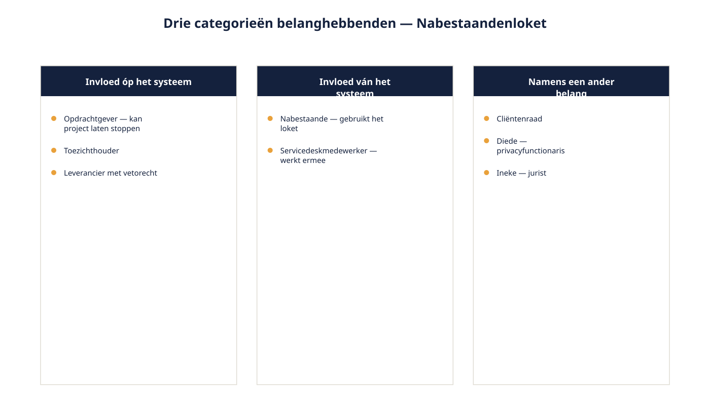
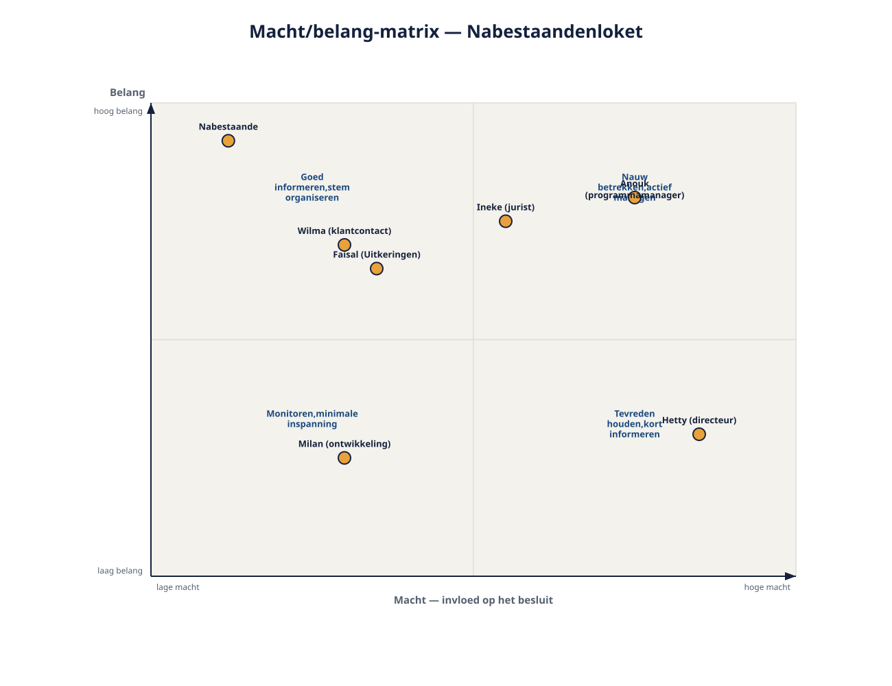
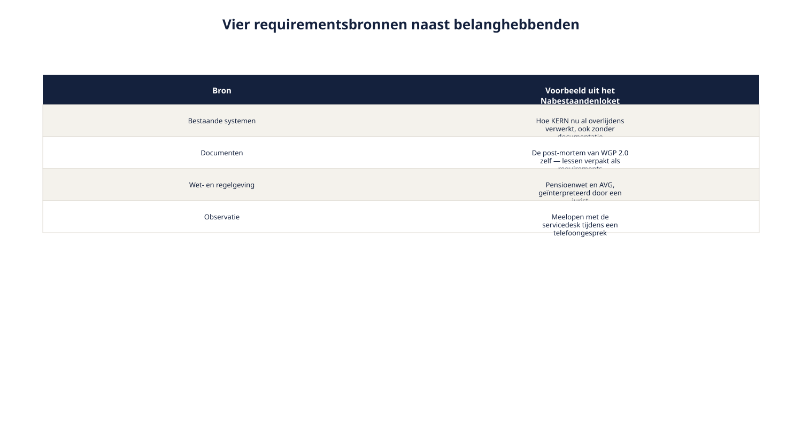

Deel 3 — Belanghebbenden en requirementsbronnen
Reader · Ductus-cursus Requirements engineering · niveau 1 (fundament) · deel 3 van 10
Cursus Requirements Engineering — Ductus. Deze cursus bereidt voor op de CPRE-certificering van IREB en is uitdrukkelijk geen vervanging van het officiële syllabus- en examenmateriaal.
Leerdoelen
Na dit deel kun je:
- uitleggen wat een belanghebbende is en welke soorten belanghebbenden er zijn;
- een belanghebbendenanalyse uitvoeren met een macht/belang-indeling;
- requirementsbronnen benoemen die geen personen zijn, en aangeven wanneer je die gebruikt;
- systematisch zoeken naar belanghebbenden die niet vanzelf in beeld komen;
- uitleggen hoe het overslaan van belanghebbenden tot een mislukking als WGP 2.0 leidt — bevinding R2.
3.1 De servicedeskmedewerker die er niet was
Terug naar de rondgang aan het eind van deel 2. Bij vrijwel elk contextdiagram dat daar werd getekend, ontbrak er iemand — meestal de servicedeskmedewerker of de uitvaartondernemer. Dat is geen toeval en het is precies wat er bij WGP 2.0 gebeurde.
Uit de post-mortem: "Ik heb dat portaal pas voor het eerst gezien op de demodag. Wij zitten de hele dag aan de telefoon met die werkgevers." De servicedesk was één keer geïnterviewd. De salarisadministrateurs van werkgevers — de mensen die het portaal dagelijks zouden gebruiken — geen enkele keer.
Dit is bevinding R2: belangrijke belanghebbenden zijn niet gehoord. Het venijnige eraan is dat het project daar niet mee begon. Bij de start had iedereen het gevoel dat de juiste mensen aan tafel zaten: de opdrachtgever, de projectleider, de architect, een paar "key users". Wie ontbrak, ontbrak omdat niemand systematisch had gezocht naar wie er nog meer belang had.
Dit deel geeft je dat systeem.
3.2 Wat is een belanghebbende?
Werkdefinitie (Ductus): een belanghebbende is ieder die invloed heeft op het systeem, er invloed van ondervindt, of er namens een ander belang bij heeft — ongeacht of die persoon zelf aan tafel zit.
Drie categorieën in die definitie verdienen aandacht, want ze worden vaak door elkaar gehaald.
Wie invloed heeft op het systeem. Kan het project laten stoppen, vertragen of veranderen: de opdrachtgever, de toezichthouder, een leverancier met een contractueel vetorecht.
Wie invloed ondervindt van het systeem. Werkt ermee, of wordt erdoor geraakt zonder ermee te werken: de gebruiker, maar ook de nabestaande die het loket nooit zal beheren en er toch middenin staat.
Wie er namens een ander belang bij heeft. Vertegenwoordigt een groep die zelf niet aan tafel zit: een cliëntenraad, een ondernemingsraad, een privacyfunctionaris die opkomt voor de belangen van de deelnemer.
De derde categorie is de categorie die het vaakst wordt vergeten, en het is precies de categorie waar de nabestaande in valt: hij is geen medewerker van Meridiaan, zit nergens in een projectteam, en is toch de belangrijkste gebruiker van het systeem.

Belanghebbende is geen synoniem voor gebruiker
Een veelgemaakte fout: alleen kijken naar wie het systeem gaat gebruiken. Faisal gebruikt het loket niet — hij beoordeelt wat het loket aanlevert. Diede gebruikt het loket niet — zij beoordeelt of het loket geoorloofd omgaat met gegevens. Beiden zijn onmisbare belanghebbenden. Wie de blik vernauwt tot "gebruikers", verliest precies de mensen die vanuit governance, recht en toezicht requirements inbrengen.
3.3 Belanghebbenden classificeren: macht en belang
Niet elke belanghebbende verdient dezelfde aandacht op hetzelfde moment. Een veelgebruikt hulpmiddel is de indeling naar macht (hoeveel invloed heeft deze persoon op het besluit) en belang (hoeveel raakt de uitkomst deze persoon).
| Laag belang | Hoog belang | |
|---|---|---|
| Hoge macht | Tevreden houden, kort informeren | Nauw betrekken, actief managen |
| Lage macht | Monitoren, minimale inspanning | Goed informeren, hun stem organiseren |
Twee waarschuwingen bij dit instrument.
Macht en belang zijn geen vaste eigenschappen van een persoon. Ze zijn situationeel en kunnen tijdens het project verschuiven. Een jurist heeft bij de start weinig macht over het ontwerp en op het moment van juridische toetsing plotseling een vetorecht.
Lage macht is geen vrijbrief om iemand te negeren. De nabestaande staat rechtsonder in dit schema — geen zeggenschap over het project, wel het grootste belang bij een goed resultaat. "Minimale inspanning" betekent hier niet dat je hun requirements links laat liggen; het betekent dat je hun stem organiseert via iemand die wél aan tafel zit, in dit geval mede via Wilma en Ineke. Dit is precies waarom categorie drie uit paragraaf 3.2 bestaat.

Vaststellen wie waar staat: niet raden, toetsen
De matrix invullen op gevoel levert een vertekend beeld op — meestal wordt de macht van de eigen afdeling overschat en die van de eindgebruiker onderschat. Beter is een korte toets per belanghebbende: kan deze persoon het project laten vertragen, stoppen of wijzigen (macht)? En wat verandert er voor deze persoon als het systeem er anders uitziet (belang)? Bij twijfel: een gesprek van vijf minuten met iemand die de organisatie kent, is beter dan een aanname aan je bureau.
3.4 Requirementsbronnen die geen personen zijn
Belanghebbenden zijn de belangrijkste bron van requirements, maar niet de enige. Vier andere bronnen verdienen een vaste plek in je zoektocht.
Bestaande systemen. Wat een huidig systeem doet — ook al is dat nergens beschreven — is een bron van eisen. Als het huidige proces een uitzondering afhandelt die niemand meer expliciet noemt omdat "het nu eenmaal zo gaat", verdwijnt die uitzondering zonder onderzoek uit het nieuwe systeem.
Documenten. Werkinstructies, klachtenregistraties, auditrapportages, eerdere projectdocumentatie. Bij Meridiaan is de post-mortem van WGP 2.0 zelf zo'n bron — een document vol requirements die niemand als zodanig heeft opgeschreven, verpakt als lessen.
Wet- en regelgeving. Een requirementsbron die niet onderhandelt. De Pensioenwet en de AVG stellen eisen aan het Nabestaandenloket die niet afhangen van wat een belanghebbende ervan vindt. Ze moeten wel geïnterpreteerd worden — vaak door een jurist — en die interpretatie is op zichzelf weer input.
Observatie. Wat mensen doen wijkt regelmatig af van wat ze zeggen dat ze doen. Meelopen met een servicedeskmedewerker tijdens een telefoongesprek over een overlijden levert vaak meer op dan een uur interview, juist omdat de medewerker onbewuste aanpassingen doet die hij zelf niet meer benoemt.

Deze bronnen vervangen belanghebbenden niet. Een wet zonder jurist die hem uitlegt, levert geen bruikbare requirement op. Maar een project dat alleen op gesprekken vertrouwt, mist alles wat mensen niet meer hardop zeggen.
3.5 Systematisch zoeken naar wie je nog niet kent
De kernvraag van dit deel is niet "hoe praat ik met belanghebbenden die ik ken" — dat komt in deel 4 — maar "hoe voorkom ik dat ik iemand over het hoofd zie." Vier zoekstrategieën die samen goed werken.
1. Langs het contextdiagram. Elke externe entiteit uit deel 2 vertegenwoordigt op zijn minst één belanghebbende. Loop het diagram na: wie is de persoon achter deze entiteit, en is die persoon zelf al gesproken of alleen verondersteld?
2. Langs het proces, niet langs de organisatie. Een organogram toont afdelingen, geen procesbetrokkenheid. Volg de melding van overlijden stap voor stap door de organisatie en noteer bij elke stap wie hem doet, wie hem controleert en wie de uitkomst ontvangt. Dat levert vaak rollen op die in geen enkel organogram voorkomen, zoals de servicedeskmedewerker die meekijkt tijdens een telefoongesprek.
3. Vraag elke belanghebbende: wie mis ik nog? De simpelste en meest onderschatte techniek. Sluit elk gesprek af met die vraag. Bij WGP 2.0 had één simpele vraag aan Wilma waarschijnlijk naar de servicedesk geleid.
4. Zoek naar wie zwijgt. Belanghebbenden met weinig macht laten zich niet vanzelf horen. Nabestaanden zitten niet in een projectteam en sturen geen e-mails naar de projectleider. Voor deze groep moet je zelf op zoek — via bestaande klachten, via cliëntenraden, via een enkel interview met iemand die recent zelf een overlijden heeft gemeld, of via de servicedeskmedewerker die hun stem dagelijks hoort.
Wat verandert er als je iteratief werkt?
De belanghebbendenanalyse wordt niet één keer aan het begin gedaan en dan afgesloten. Bij elke iteratie verandert wat relevant is: een belanghebbende die in sprint 1 nauwelijks belang had, kan in sprint 4 ineens de belangrijkste stem zijn omdat het onderwerp verschuift. Wat blijft: de vier zoekstrategieën werken net zo goed op kleine schaal — "wie mis ik nog voor déze backlogitem?" is een vraag die in twee minuten te stellen is en die net zo vaak wordt overgeslagen als zijn grote broer.
3.6 Omgaan met tegenstrijdige belangen
Belanghebbenden zijn het zelden volledig met elkaar eens, en dat is geen fout in het proces (principe 2 uit deel 2). Faisal wantrouwt zelfbediening bij onomkeerbare stappen; Wilma wil minder telefoonverkeer. Beide zijn geldige belangen die in dezelfde ruimte om voorrang vragen.
De valkuil is dat de requirements engineer dit conflict gaat oplossen. Dat is niet zijn rol (deel 1). Wat wel zijn rol is:
- het conflict expliciet maken: benoemen dat er twee eisen zijn die elkaar raken, en waarom;
- de belangen achter de posities blootleggen — Faisal wil geen onomkeerbare fouten, niet per se "geen zelfbediening". Zodra het belang zichtbaar is, ontstaat er vaak ruimte voor een oplossing die beide dient (bijvoorbeeld: zelfbediening met een bevestigingsstap bij onomkeerbare acties);
- het geheel voorleggen aan wie mag beslissen — meestal de opdrachtgever, soms een stuurgroep.
Dit is dezelfde beweging als bij de systeemgrens in deel 2: zichtbaar maken, niet dichttimmeren.
3.7 Bevinding R2 gesloten
Bevinding R2 luidde dat belangrijke belanghebbenden niet zijn gehoord — de servicedesk één keer, de salarisadministrateurs geen enkele keer.
Wat je nu in handen hebt:
- een scherp begrip van wat een belanghebbende is, inclusief de categorie die het vaakst wordt vergeten;
- een macht/belang-indeling om aandacht te verdelen zonder iemand te negeren;
- vier requirementsbronnen naast personen;
- vier zoekstrategieën om systematisch te ontdekken wie je nog niet kent;
- een manier om tegenstrijdige belangen zichtbaar te maken zonder ze zelf op te lossen.
Wat je nog niet hebt: een manier om met deze belanghebbenden daadwerkelijk het gesprek te voeren zodat er iets bruikbaars uitkomt. Dat is deel 4.
Samenvatting
- Een belanghebbende heeft invloed óp, ondervindt invloed ván, of vertegenwoordigt een belang bíj het systeem — de derde categorie wordt het vaakst vergeten.
- De macht/belang-matrix verdeelt aandacht, maar lage macht is geen vrijbrief om te negeren.
- Naast belanghebbenden: bestaande systemen, documenten, wet- en regelgeving, observatie.
- Vier zoekstrategieën: langs het contextdiagram, langs het proces, vragen wie ontbreekt, zoeken naar wie zwijgt.
- Tegenstrijdige belangen maak je zichtbaar; oplossen doet de besluitvormer.
Begrippen
belanghebbende · macht/belang-matrix · requirementsbron · observatie · stakeholderanalyse · vertegenwoordiging · belangenconflict
Leeswijzer naar het volgende deel
Deel 4 behandelt de basistechnieken van elicitatie: hoe je met de belanghebbenden die je nu hebt gevonden een gesprek voert dat verder komt dan de eerste, voor de hand liggende oplossing. Daarmee openen we de eerste helft van bevinding R3.